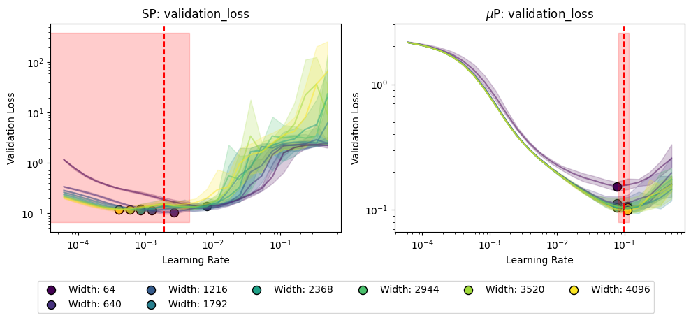
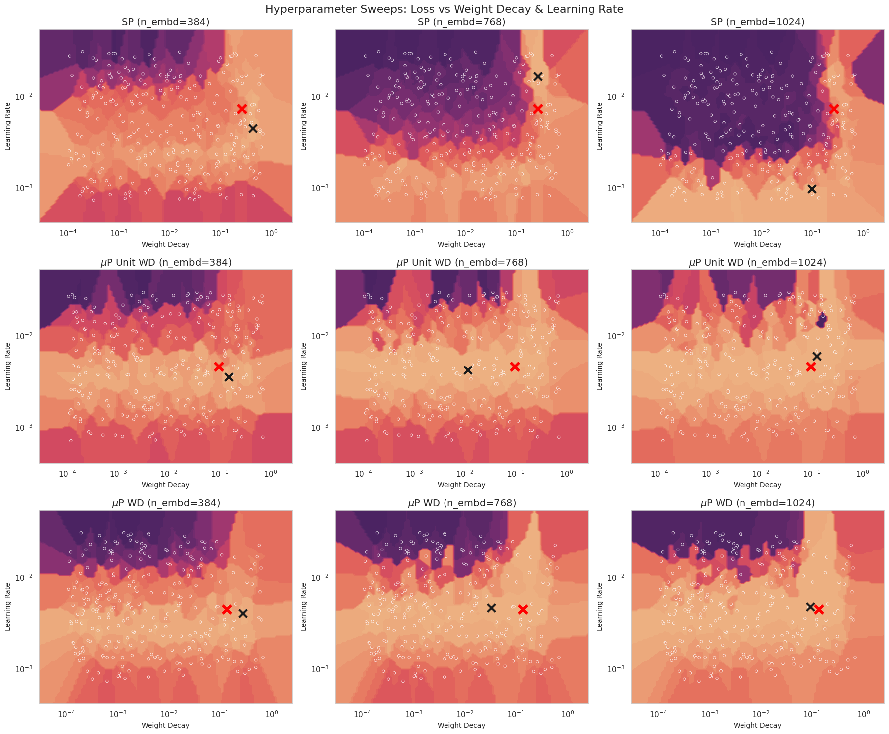
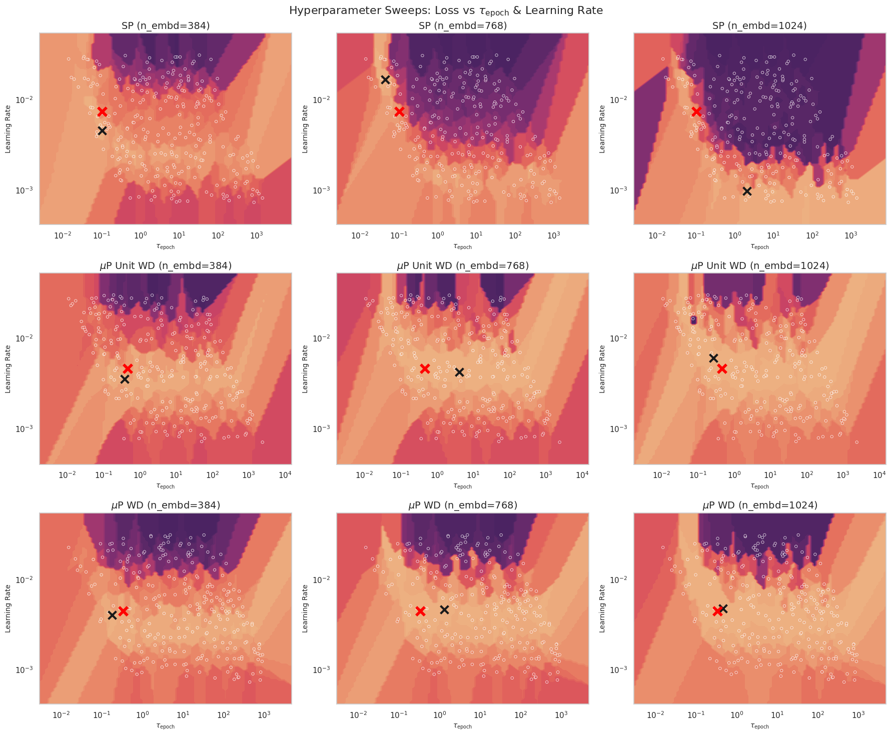
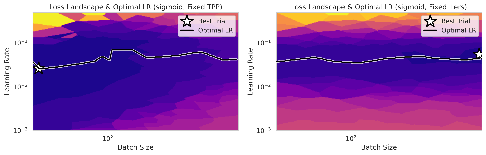
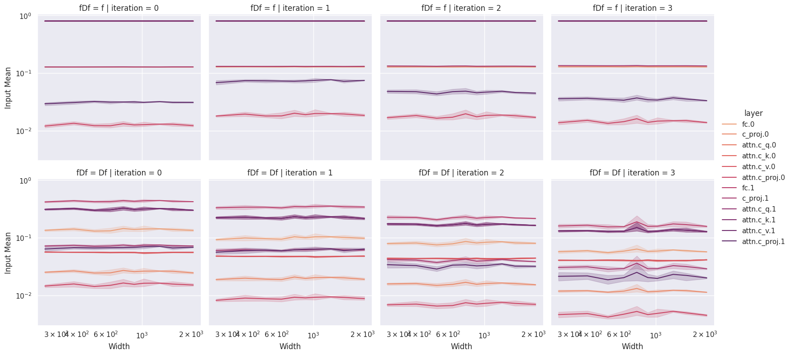
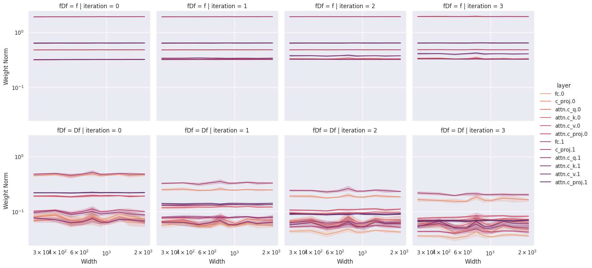
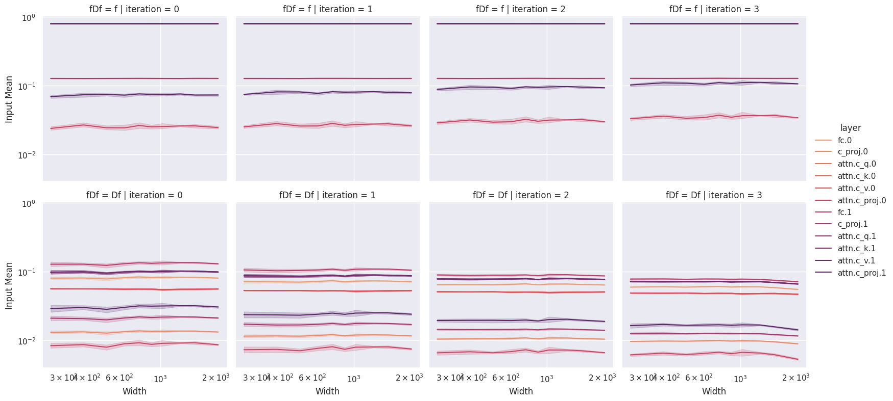
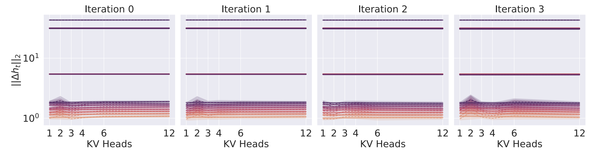
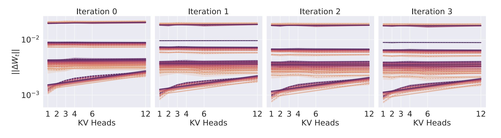
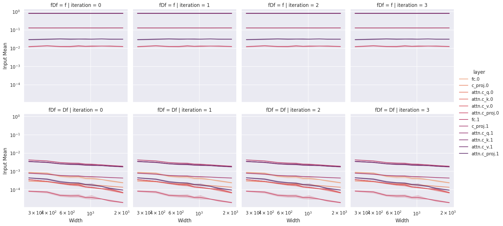

A heuristic guide to deriving and debugging $\mu$P using the spectral norm perspective. Work completed while the author was affiliated with UC Davis LUKA Lab and MBZUAI Institute of Foundation Models.
The maximal update parameterization ($\mu$P) reduces pre-training costs by enabling zero-shot hyperparameter transfer across model scales. The spectral formulation of $\mu$P — which places conditions directly on weight-matrix spectral norms rather than on layer activations — is both more intuitive and more stringent than the original feature-learning conditions. We argue that the spectral perspective should be the foundation for all future $\mu$P work, present a small toolkit of heuristics that makes novel $\mu$P derivations accessible to practitioners, and illustrate how the spectral view resolves subtle coordinate-check failures that the standard view misses entirely.
Last updated: 02.15.26
The maximal update parameterization ($\mu$P) (Yang et al., 2022) has proven itself a valuable tool for reducing pre-training costs at scale. Beyond enabling learning rate transfer across model scales, $\mu$P improves training dynamics by ensuring that learning occurs at the same rate across disparate layers. For large-scale training runs a correct $\mu$P implementation could save millions of dollars in compute. For researchers and engineers, correctly implementing $\mu$P reduces the dimensionality of hyperparameter sweeps and produces more reliable results by getting models closer to compute optimal. Additionally, $\mu$P eliminates a common pitfall in the literature where two models are compared but only one model is hyperparameter tuned, which can lead to misleading or downright incorrect conclusions about model scaling and behavior.
$\mu$P is not merely a theoretical consideration. During training under the standard parameterization, different layers learn at different rates, effectively freezing the embeddings during training and wasting compute on sub-optimal weight updates. When using $\mu$P for large networks we can attain lower losses by ensuring all layers learn at the correct rate. $\mu$P also helps reduce tuning costs when preparing for large-scale training runs. By enabling zero-shot hyperparameter transfer (see figure below) we can cheaply tune small models and avoid the expensive extrapolation and validation steps required to find the optimal hyperparameters for large models.

This blog post is not a comprehensive introduction or tutorial on $\mu$P; we assume that the reader has some familiarity with $\mu$P, either through reading the Tensor Programs V paper (TP-V) (Yang et al., 2022) or through a resource like Dey's Practitioner's Guide to $\mu$P (Dey et al., 2024). This post is intended for audiences who want a practical toolkit for applying $\mu$P and who don't have time to sort through the developments in the literature over the past several years. In particular we want to extend the practitioner's toolkit so that they can implement $\mu$P models which go beyond the original width-based models studied by Yang. The development of $\mu$P now spans nearly half a decade and involves challenging mathematics, rendering much of the theory difficult to access. We view this as unfortunate, and believe that the mathematics and understanding yielded by $\mu$P are extremely valuable for ML practitioners. To increase the understanding and awareness of $\mu$P we present a heuristic approach to $\mu$P derivations, based largely on the more recent "spectral perspective" of $\mu$P (Yang et al., 2023b).
We argue that this later approach is better suited for understanding and deriving $\mu$P. The original $\mu$P formulation is derived by studying the updates of the weight matrices through constraints on the outputs of the matrix multiply. Spectral $\mu$P instead directly constrains the weight matrices themselves. This will also allow us to directly derive $\mu$P scalings for depth. Additionally, the original $\mu$P formulation admits a subtle failure mode where all of the conditions for feature learning are satisfied but learning rate transfer does not occur (see below). Spectral $\mu$P prevents this failure mode from occurring.
From a practitioner's perspective, having conditions directly on the weight matrices instead of on the layer outputs allows us to directly understand and debug $\mu$P implementations, instead of trying to intuit the behavior of matrices by looking only at the outputs to each layer.
We strive to present a distillation of the mathematical theory and as such many of our results are not rigorous. However rigorous statements for our results can be found scattered throughout the literature.
Throughout we discuss practical insights that we have learned through the process of deriving, implementing, and debugging $\mu$P. We hope that this guide can serve as a valuable resource for practitioners moving forward in implementing $\mu$P, and we advocate for using either $\mu$P or Muon for large scale training moving forwards.
In this blog post we:
The seminal paper in the study of $\mu$P is the Tensor Programs V paper (TP-V) (Yang et al., 2022), which presented the successful application of Tensor Programs to improving real-world training dynamics. We briefly note that this is the fifth paper in what is generally considered a six to ten paper series (depending on how you're counting). We will not focus on the first four papers in this blog (Yang, 2019) (Yang, 2020a) (Yang, 2020b) (Yang & Hu, 2020), but emphasize that the $\mu$-transfer theory posed in TP-V crucially builds on Yang's previously developed theory. The original TP-V paper addresses learning rate transfer across width, and we discuss extensions and attempted extensions of this work below.
It's been three years since the TP-V paper, and the community has explored improvements in understanding of $\mu$P as well as validation of $\mu$P up to the 13B scale (Dey et al., 2023). Anecdotal rumors are that several of the large frontier labs are using $\mu$P at much larger scales than this.
In terms of theoretical developments we choose to emphasize the "spectral $\mu$P" paper written by Yang, Simons, and Bernstein (Yang et al., 2023b), which re-formulates $\mu$P in terms of spectral weight norms. We will discuss this theoretical perspective in much greater detail below. Yang's group also attempted to apply $\mu$P to the case of depth (Yang et al., 2023a) (TP-VI), but was only able to get successful feature learning with residual blocks consisting of a single linear weight matrix and as such does not apply to the practical case of training LLMs. Finally, practitioners should be aware of the Complete-P paper (Dey et al., 2025), which primarily addresses the deficiencies in the TP-VI paper and derives the correct $\mu$P parameterization for depth. We consider this paper to be the current state of the art for applying $\mu$P in practice. The authors additionally derive scalings for other aspects of LLM training which were left out from the original $\mu$P papers. We suggest that the Complete-P paper be used as a reference for implementing $\mu$P since they have the most comprehensive table of parameter scalings.
More recently our own group has extended the $\mu$P theory to cover the challenging case of grouped query attention (GQA) which required some subtle extensions to the overall theory (Chickering et al., 2025).
Finally, as this blog post was being finished, Soufiane Hayou released the first actual mathematical proof that learning rate transfers under $\mu$P (Hayou, 2025). This exciting new work finally bridges the gap between the theoretical intuitions of TP-V and a rigorous theory of learning rate transfer.
The Tensor Programs V paper proposes a method for zero-shot hyperparameter tuning by carefully applying the analysis from Tensor Programs to determine the proper learning rate and initialization schemes for a neural network (Yang et al., 2022). To this end the authors define the concept of feature learning. Let $\boldsymbol{h}_t^{(\ell)}$ be the activations of the $\ell$-th layer of the neural network at timestep $t$, and let $\Delta \boldsymbol{h}_t^{(\ell)}:=\boldsymbol{h}_t^{(\ell)}-\boldsymbol{h}_{t-1}^{(\ell)}$. If the output of the $\ell$-th layer is $\boldsymbol{h}_t^{(\ell)}\in \mathbb{R}^n$, we say that feature learning is occurring for the layer if
$$||\,\boldsymbol{h}_t^{(\ell)}\,||_2=\Theta(\sqrt{n}), \qquad ||\,\Delta \boldsymbol{h}_t^{(\ell)}\,||_2=\Theta(\sqrt{n}), \tag{1}$$as $n\rightarrow \infty$. The authors show that for a network satisfying feature learning at every layer we should (with some caveats) expect that the learning rate transfers across models of different width $n$. In other words, we can sweep hyperparameters (learning rate) at some $n=n_0$ and use those same hyperparameters (learning rate) for a model with $n=n_*$.
The theory is called maximal (as in maximal update parameterization) because if the layer updates $\Delta \boldsymbol{h}_t^{(\ell)}$ were any smaller (asymptotically) we would learn very slowly, but if they were any bigger the training would diverge. Thus, this $\sqrt{n}$ scaling is precisely the fastest we can update our weights without the training diverging.
While groundbreaking, $\mu$P and an intuitive understanding of feature learning remained challenging after the publication of TP-V. In a follow-up work, Yang, Simons, and Bernstein provide a more mathematically satisfying explanation and intuition for feature learning, phrased in terms of the weights of a neural network instead of the activations (Yang et al., 2023b). This viewpoint is preferable for several reasons:
In particular, Yang et al. prove that conditions on the spectral norm of the weight matrices (see equation $(2)$ below) imply that feature learning in the sense of equation $(1)$ holds.
To follow their argument we consider a dense MLP network with input dimension $d_{\text{in}}$, output dimension $d_{\text{out}}$, and hidden dimension $n$. We consider the case where both $d_{\text{in}}$ and $d_{\text{out}}$ are fixed but we scale the hidden dimension $n$. This setting can be mapped to transformer LLMs and conv-nets with little to no modification, but we choose this simple setting for pedagogical purposes. We then set $n_{\text{in}}^{(\ell)}=d_{\text{in}}$ for the input layer, and $n_{\text{in}}^{(\ell)}=n$ for the hidden and output layers, as well as $n_{\text{out}}=n$ for the input and hidden layers, and $n_{\text{out}}=d_{\text{out}}$ for the output layer.
Under this notation, (Yang et al., 2023b) prove that the weights of layer $\ell$ at timestep $t$, given by $\boldsymbol{W}^{(\ell)}_t\in \mathbb{R}^{n_{\text{out}}^{(\ell)}\times n_{\text{in}}^{(\ell)}}$, and the updates $\Delta \boldsymbol{W}_t^{(\ell)}:=\boldsymbol{W}_t^{(\ell)} - \boldsymbol{W}_{t-1}^{(\ell)}$, should satisfy the following constraints on their spectral norm
$$||\,\boldsymbol{W}_t^{(\ell)}\,||=\Theta\left(\frac{\sqrt{n_{\text{out}}^{(\ell)}}}{\sqrt{n_{\text{in}}^{(\ell)}}}\right), \qquad ||\,\Delta\boldsymbol{W}_t^{(\ell)}\,||=\Theta\left(\frac{\sqrt{n_{\text{out}}^{(\ell)}}}{\sqrt{n_{\text{in}}^{(\ell)}}}\right). \tag{2}$$Recall that the spectral norm, or induced 2-norm, is given by
$$||\,\boldsymbol{A}\,||:=\sup_{||\,\boldsymbol{x}\,||_2=1}\,||\,\boldsymbol{A}\boldsymbol{x}\,||_2.$$In what follows we dispense with full rigor and focus on the essence of the mathematical argument. However we stress that the statements made here can be made fully rigorous, and indeed this is done in (Yang et al., 2023b).
Informally, during neural network training we have the relationship
$$||\,\boldsymbol{W}_t^{(\ell)}\boldsymbol{x}\,||_2=\Theta(||\,\boldsymbol{W}_t^{(\ell)}\,||\,||\,\boldsymbol{x}\,||_2),$$from which the implication that $(2)\,\Rightarrow\,(1)$ becomes quite clear if we ignore the activation function, since we have assumed recursively that the inputs $\boldsymbol{x}$ satisfy the feature learning condition $(1)$.
The reverse implication is not true. Feature learning in the sense of condition $(1)$ does not imply that the spectral feature learning condition $(2)$ is met.
Consider a weight matrix $\boldsymbol{W}\in \mathbb{R}^{n\times n}$ with weight update $\Delta \boldsymbol{W}$. Assume that $||\,\boldsymbol{W}_0\,||=\Theta(1)$, but that $||\,\Delta \boldsymbol{W}_t\,||= \Theta(n^{-\alpha})$ for some $\alpha > 0$. Further assume that the inputs to this layer satisfy feature learning, that is $||\,\boldsymbol{h}_t\,||_2 = \Theta(\sqrt{n})$, $||\,\Delta \boldsymbol{h}_t\,||_2 = \Theta(\sqrt{n})$. Ignoring the non-linearity, it is clear that this weight matrix does not satisfy the conditions $(2)$ of spectral $\mu$P. However, note that
$$||\,\boldsymbol{W}_t\boldsymbol{h}_t\,||_2 = ||\,\boldsymbol{W}_0\boldsymbol{h}_t + \sum_{\tau=1}^t\Delta \boldsymbol{W}_\tau \boldsymbol{h}_t\,|| = \Theta\left(||\,\boldsymbol{h}_t\,||_2 + \sum_{\tau=1}^tn^{-\alpha}||\,\boldsymbol{h}_t\,||_2\right) = \Theta(\sqrt{n}),$$so the output of the layer scaling satisfies feature learning in the sense of $(1)$. Furthermore
$$||\,\Delta(\boldsymbol{W}\boldsymbol{h})_t\,||_2 = ||\,\Delta\boldsymbol{W}_t\boldsymbol{h}_t + \boldsymbol{W}_t \Delta \boldsymbol{h}_t\,||_2 = \Theta(||\,\Delta \boldsymbol{W}_t\,||\,||\,\boldsymbol{h}_t\,||_2 + ||\,\boldsymbol{W}_t\,||\,||\,\Delta \boldsymbol{h}_t\,||_2) = \Theta(n^{1/2-\alpha} + n^{1/2})=\Theta(\sqrt{n}),\tag{3}$$and the updates also satisfy $(1)$. Thus, feature learning is occurring despite the fact that the spectral conditions are not satisfied!
The reason for this failure should be quite clear: if a weight matrix is sub-maximally updated (in this case $||\,\Delta \boldsymbol{W}\,||= o(1)$), then the correct scaling from the previous layer is propagated to the current layer purely through the initialized weights $\boldsymbol{W}_0$. This can be taken to the extreme case by setting the weight updates identically to zero, and we see that feature learning in the sense of $(1)$ continues to occur (see below for an empirical demonstration of this fact).
This is an important distinction because the impetus for $\mu$P is to be maximally training the network. Quite literally we would like the weight updates specifically to be updated as maximally as possible. However this criteria is not actually enforced by condition $(1)$, even though this is the philosophical motivation for a feature learning condition like $(1)$. Thus, we suggest that the spectral feature learning condition is the "correct" perspective for maximal update parameterizations, and that this stronger conception of feature learning should be the basis for theory moving forwards.
We briefly address a common misconception that we have encountered when discussing $\mu$P. Many readers have read TP-V and come away with the conclusion that $\mu$P makes predictions on the size of network activations through time. However this is manifestly not the case.
Consider the more detailed notation $f(\boldsymbol{a}; \boldsymbol{b}) =\Theta_{\boldsymbol{a}}(A)$, where $f$ is some function depending on the parameters $\boldsymbol{a}, \boldsymbol{b}$. The notation $\Theta_{\boldsymbol{a}}(A)$ means that we have the inequality
$$c(\boldsymbol{b})A(\boldsymbol{a})\leqslant f(\boldsymbol{a}; \boldsymbol{b}) \leqslant C(\boldsymbol{b})A(\boldsymbol{a}),$$where $0 < c(\boldsymbol{b}), C(\boldsymbol{b}) < \infty$ are constants (in $\boldsymbol{a}$) and the inequality is expected to hold for all $\boldsymbol{a}$ in some unbounded subset of $\boldsymbol{a}\ni \mathbb{R}^d$.
Specifically for $\mu$P, we make statements about the spectral norm of the form $||\,\boldsymbol{W}_t\,||=\Theta_{n}(A(n))$, and notably we do not make statements of the form $||\,\boldsymbol{W}_t\,||=\Theta_{n,t}(A(n, t))$. Thus, when we say that $||\,\boldsymbol{W}_t\,||=\Theta(1)$, this simply means that as we scale $n$, the hidden size, we must have
$$c(t)\leqslant ||\,\boldsymbol{W}_t(n)\,||\leqslant C(t).$$All that $\mu$P says about the upper and lower bounds in time is that the bounds cannot depend on the network width, for sufficiently large networks. In other words, there exist width dependent upper and lower bounds, but absolute upper and lower bounds in time, with respect to width:
$$c(t) \leqslant \widetilde{c}(t, n) \leqslant ||\,\boldsymbol{W}_t(n)\,||\leqslant \widetilde{C}(t, n)\leqslant C(t).$$Coordinate checking across time will not necessarily show constant behavior as it does when we coordinate check across network width.
While the mathematics underlying $\mu$P may be both deep and complicated, we have found in practice that deriving $\mu$P for new architectures requires insight into neither Tensor Programs nor random matrix theory. Rather, $\mu$P derivations can typically be done using a few simple heuristics (which are, of course, ultimately derived from Tensor Programs and random matrix theory!). We present these heuristics which can be used to understand the observed dynamics of neural network training and allow practitioners to derive novel $\mu$P scalings.
At a high-level, what we will do is assume that the spectral feature learning conditions $(2)$ ensure hyperparameter transfer, and then systematically examine the weight matrices in the network and make sure that they satisfy these conditions.
In what follows we will use the notion of "typical size" which is used by Yang and is common in the random matrix theory literature (Tao, 2012). Readers may instead know this quantity as the first absolute moment and it is given by
$$a_i = \Theta(A), \quad\Rightarrow\quad \mathbb{E}|a_i|=A,$$with $a_i = \Theta(A)$ denoting that $a_i$ is of typical size $A$. This is used to understand what we expect the entries of a random matrix to look like, and is commonly used to heuristically estimate norms of a matrix or vector. As an example computation, consider a random vector $\boldsymbol{x}$ with entries of typical size $p$. We can apply the law of large numbers (LLN) to heuristically estimate
$$||\,\boldsymbol{x}\,||_2^2 = \sum_{i}|x_i|^2 = \Theta\left(n\mathbb{E}|x_i|^2\right) = \Theta(np^2).$$With these preliminaries dispensed with we now introduce our heuristics which we can use to derive $\mu$P in a variety of settings. Our first heuristic regards the scaling of the model gradient as a function of the layer width:
Heuristic 1: Gradients. Gradients scale like
$$\nabla_{\boldsymbol{W}_t^{(\ell)}}L(\boldsymbol{W}_t)=\begin{cases}\Theta(1),\qquad&\text{$\ell$ is an output layer} \\ \Theta\!\left(\frac{1}{n}\right), \qquad&\text{otherwise}\end{cases}.$$Doing our analysis in terms of the spectral norm allows us to use standard theorems from random matrix theory to understand how the size of the weight matrices changes as a function of their input shapes. In particular we can use the Bai-Yin theorem (Bai & Yin, 1993) (Yin et al., 1988) which tells us how the spectral norm of a rectangular random matrix scales. We note that there are some additional caveats to applying Bai-Yin, but all of them are satisfied in practice during neural network training:
Heuristic 2: Bai-Yin Theorem. Let $\boldsymbol{W}\in \mathbb{R}^{m\times n}$ with entries sampled i.i.d. from $\mathcal{N}(0, \sigma^2)$, then we have
$$||\,\boldsymbol{W}\,||=\sigma(\sqrt{n}+\sqrt{m}) + \text{L.O.T.}$$In particular, as $m$ and $n$ grow large we have
$$||\,\boldsymbol{W}\,||=\Theta\left(\sigma(\sqrt{n}+\sqrt{m})\right).$$If $\boldsymbol{W}$ is instead sampled from a distribution with non-zero mean $\mathcal{N}(\mu, \sigma^2)$ then we have
$$||\,\boldsymbol{W}\,||=\Theta(\mu\sqrt{nm}).$$Finally, while the internal representations of a neural network do not actually look i.i.d. Gaussian, we have found that treating them as if they are i.i.d. Gaussian is a productive way to derive $\mu$P:
Heuristic 3: Playing pretend. $\mu$P scalings can be derived by assuming that $\boldsymbol{W}_0, \Delta\boldsymbol{W}_t$ are sampled i.i.d. from a Gaussian distribution. Furthermore we can always assume that the previous layer quantities $\boldsymbol{h}_t$ and $\Delta \boldsymbol{h}_t$ are i.i.d. sampled from a Gaussian.
Heuristic 3 is certainly not rigorous — in fact it isn't actually even true! But we find in practice that to derive the first order scalings of the weight spectral norms this assumption is sufficient to capture the actual training dynamics.
The network initialization can be directly read off of equation $(2)$ together with Heuristic 2 (the Bai-Yin theorem), since for a weight matrix $\boldsymbol{W}\in\mathbb{R}^{m\times n}$
$$||\,\boldsymbol{W}\,||=\underbrace{\Theta(\sigma(\sqrt{n}+\sqrt{m}))}_{\text{Heuristic 2}}=\underbrace{\Theta\!\left(\frac{\sqrt{m}}{\sqrt{n}}\right)}_{\text{Equation $(2)$}}.$$Solving for the standard deviation gives
$$\sigma = \frac{\sqrt{m}}{n+\sqrt{nm}}.$$If we carefully track which of the dimensions is being scaled, then we arrive at the standard $\mu$P initialization rule:
$$\sigma^\ell = \begin{cases}\Theta(n^{-1}), \qquad &\text{$\ell$ is an output layer}, \\ \Theta(n^{-1/2}), \qquad &\text{$\ell$ is a hidden layer}, \\ \Theta(1), \qquad &\text{$\ell$ is an input layer}\end{cases}.$$Stochastic gradient descent is the easiest optimizer to study. We simply update the weights according to
$$\boldsymbol{W}_t^{(\ell)} = \boldsymbol{W}_{t-1}^{(\ell)}-\eta^{(\ell)}\nabla_{\boldsymbol{W}_t^{(\ell)}}L(\boldsymbol{W}_t),$$where $\eta$ is the learning rate hyperparameter. According to the spectral condition $(2)$, this then implies that we must have
$$||\,\Delta \boldsymbol{W}_t^{(\ell)}\,||=\eta^{(\ell)}\,||\,\nabla_{\boldsymbol{W}_t^{(\ell)}}L(\boldsymbol{W}_t)\,||.$$Determining the correct scaling for the per-layer learning rates $\eta^{(\ell)}$ is then reduced to understanding how the gradient scales in spectral norm. From Heuristic 1 we know how the individual elements of the gradient $\nabla_{\boldsymbol{W}_t^{(\ell)}}L(\boldsymbol{W}_t)$ scale, and thus we compute that
$$||\,\nabla_{\boldsymbol{W}_t^{(\ell)}}L(\boldsymbol{W}_t)\,||=\begin{cases}\Theta(\sqrt{n}), &\qquad \text{$\ell$ is an output layer}, \\ \Theta(1), &\qquad \text{$\ell$ is a hidden layer}, \\ \Theta(1/\sqrt{n}), &\qquad \text{$\ell$ is an input layer}\end{cases}.$$Thus, we can use the spectral feature learning condition $(2)$ to read off the learning rate scalings
$$\eta^{(\ell)} = \begin{cases}\Theta(n^{-1}), \qquad &\text{$\ell$ is an output layer}, \\ \Theta(1), \qquad &\text{$\ell$ is a hidden layer}, \\ \Theta(n), \qquad &\text{$\ell$ is an input layer} \end{cases}.$$The Adam optimizer (Kingma & Ba, 2014) builds on SGD by tracking the first and second moments of the gradients over time
$$\begin{align*} g_t &= \nabla_{\boldsymbol{W}_t^{(\ell)}}L(\boldsymbol{W}_t), \\ m_t &= \beta_1 m_{t-1}+(1-\beta_1)g_t, \\ v_t &= \beta_2v_{t-1}+(1-\beta_2)g_t^2, \\ \hat{m}_t &= \frac{m_t}{1-\beta_1^t}, \\ \hat{v}_t&=\frac{v_t}{1-\beta_2^t}, \\ \hat{r}_t:&=\frac{\hat{m}_t}{\sqrt{\hat{v}_t}+\varepsilon}, \end{align*}$$and then the weight update is given by
$$\boldsymbol{W}_t^{(\ell)}=\boldsymbol{W}_{t-1}^{(\ell)}-\eta^{(\ell)}\hat{r}_t.$$How large are the Adam optimizer steps $\hat{r}_t$? From Heuristic 1 we know how the gradients scale, and thus
$$m_t = \Theta(\nabla_{\boldsymbol{W}_t^{(\ell)}}L(\boldsymbol{W}_t)),$$due to the linearity of addition. Similarly, the typical size of the Hadamard product of the gradient has the typical size
$$v_t = \Theta((\nabla_{\boldsymbol{W}_t^{(\ell)}}L(\boldsymbol{W}_t))^2) \quad \Rightarrow \quad \sqrt{\hat{v}_t}=\Theta(\nabla_{\boldsymbol{W}_t^{(\ell)}}L(\boldsymbol{W}_t)).$$In particular we then expect that the typical size of the $\hat{r}_t$ is
$$\hat{r}_t = \Theta(1), \qquad \varepsilon \ll \sqrt{\hat{v}_t}.$$Technically we can be more precise and determine exactly how small $\varepsilon$ must be to get consistent training dynamics. This scaling was first observed in the literature seemingly independently by (Dey et al., 2025) and (Everett et al., 2024). Let $\overline{m}_t = A(n)\hat{m}_t = \Theta(1)$ and $\overline{v}_t=A^2(n)\hat{v}_t=\Theta(1)$, where $A(n)$ captures the heterogeneity of the gradient scaling between layers. After some algebra we arrive at the informal scaling
$$\hat{r}_t = \frac{\overline{m}_t}{\sqrt{\overline{v}_t} + A(n)\varepsilon}.$$This implies that for transferable dynamics to continue, we must induce a dependence $\varepsilon(n)$ so that $A(n)\varepsilon(n)=\Theta(1)$. We find in practice that for small-scale experimentation, setting $\varepsilon$ small (say $\varepsilon < 10^{-10}$) suffices to have transferable dynamics without adjusting the Adam $\varepsilon$ parameter. However for large-scale runs $\overline{m}_t$ and $\overline{v}_t$ may shift significantly in time and violate the $\mu$P hypotheses in practice.
Because we know the typical size of the Adam update steps is $\hat{r}_t = \Theta(1)$, we can apply Heuristic 2 to understand that if the weights have shape $\mathbb{R}^{m\times n}$ then the spectral norm is simply $||\,\hat{r}_t\,||=\Theta(\sqrt{mn})$. Then applying the spectral feature learning conditions $(2)$ we have
$$\eta^{(\ell)} = \begin{cases}\Theta(n^{-1}), \qquad &\text{$\ell$ is an output layer}, \\ \Theta(n^{-1}), \qquad &\text{$\ell$ is a hidden layer}, \\ \Theta(1), \qquad &\text{$\ell$ is an input layer} \end{cases}.\tag{4}$$AdamW builds on the Adam optimizer by additionally adding a weight decay term with decay strength $\lambda^{(\ell)}$ (Loshchilov & Hutter, 2017). The Adam weight update is then replaced by
$$\boldsymbol{W}_t^{(\ell)}=(1-\lambda^{(\ell)}\eta^{(\ell)})\boldsymbol{W}_{t-1}^{(\ell)}-\eta^{(\ell)}\frac{\hat{m}_t}{\sqrt{\hat{v}_t} + \varepsilon}, \tag{5}$$which adds dynamical pressure to return the weights to the origin at every step. To ensure that these updates retain their correct size in the spectral norm we must have that $\lambda^{(\ell)}\eta^{(\ell)}=\Theta(1)$.
To see why, suppose that $\lambda^{(\ell)}\eta^{(\ell)}=\Theta(n^{-\alpha})$ for $\alpha > 0$, then in the limit that $n\rightarrow \infty$ our update rule collapses to the original Adam update and we retain no benefit from using weight decay. On the other hand, if $\lambda^{(\ell)}\eta^{(\ell)}=\Theta(n^\alpha)$, then for $n$ sufficiently large our update rule is
$$\Delta \boldsymbol{W}_t^{(\ell)} \sim n^{\alpha}\boldsymbol{W}_{t-1}^{(\ell)},$$and our training will cease to be dependent on the data. I.e. meaningful learning becomes impossible.
These considerations together with the Adam learning rate scaling $(4)$ lead us to conclude that for the weight decay update described in $(5)$ we should scale the weight decay according to
$$\lambda^{(\ell)} = \begin{cases}\Theta(n), \qquad &\text{$\ell$ is an output layer}, \\ \Theta(n), \qquad &\text{$\ell$ is a hidden layer}, \\ \Theta(1), \qquad &\text{$\ell$ is an input layer} \end{cases}.$$The spectral $\mu$P framework can also be extended to derive the corrected depth scalings arrived at in Complete-P through the addition of an extraneous desiderata. We argue that the depth scaling from TP-VI is wrong because their updates are too small in norm. We show that depth-$\mu$P does not satisfy the spectral feature learning conditions, and furthermore that assuming the spectral feature learning conditions prevents lazy-learning (Dey et al., 2025).
Thus, we are able to arrive at the correct Complete-P (Dey et al., 2025) scaling without adding additional desiderata, using only the spectral feature learning conditions.
For our setting we consider the residual blocks of a depth $L$ network given by
$$\boldsymbol{h}^{\ell+1}=\boldsymbol{h}^\ell + L^{-\alpha}\mathcal{F}_\ell(\boldsymbol{h}^\ell; \boldsymbol{W}^\ell), \qquad \ell=1, \cdots, L,$$for a residual block $\mathcal{F}_\ell$ with parameters $\boldsymbol{\theta}^\ell$, usually an MLP block. Of course, to study the operator norms we can write this computation as
$$\boldsymbol{G}^\ell:=\left(\boldsymbol{I} + L^{-\alpha}\mathcal{F}_\ell(\,\cdot\,; \boldsymbol{W}^\ell)\right), \qquad \ell=1, \cdots, L,$$so that $\boldsymbol{G}^\ell\boldsymbol{h}^{\ell} = \boldsymbol{h}^{\ell+1}$. Making standard assumptions about composition and lack of cancellation we have
$$||\,\boldsymbol{G}^\ell\,|| = \Theta\left(||\,\boldsymbol{G}^{\ell - 1}\,|| + L^{-\alpha}||\,\mathcal{F}_\ell\,||\right).$$Recursing this identity gives us the spectral bound
$$||\,\boldsymbol{G}^L\,|| =\Theta\left(1+L^{1-\alpha}\max_\ell||\,\mathcal{F}_\ell\,||\right).$$In order for the network outputs to remain stable at initialization, we require that the summation through the entirety of the network at initialization scales correctly, that is
$$L^{1-\alpha}\max_\ell||\,\mathcal{F}_\ell\,||=\mathcal{O}(1)$$in both $L$ and $n$, where $n$ is the hidden size. For typical MLP implementations it is sensible to require that $||\,\mathcal{F}_\ell\,||=\Theta(1)$, in which case we must have that $\alpha=1$ to keep the correct scaling. However this is not the only available way to parameterize depth (see below). Note that for any $\alpha > 1$, (Yang et al., 2023a) prove that the parameterization is trivial (in the limit the network converges to the identity). Another way to think about this is that for non-trivial learning to occur we must have the contributions from the residual branch and the MLP branch be the same asymptotic size at the output of the network.
Depth $\mu$P Doesn't Satisfy Spectral Feature Learning. Our first observation is that the proposed depth-$\mu$P framework from TP-VI does not satisfy the spectral feature learning conditions $(2)$. The authors of TP-VI consider MLP blocks $\mathcal{F}_\ell = \boldsymbol{W}^\ell\boldsymbol{V}^\ell$, with $\boldsymbol{W}^\ell, \boldsymbol{V}^\ell\in \mathbb{R}^{n\times n}$. Our argument will also apply to rectangular matrices, but we choose square matrices here for ease of exposition. Depth-$\mu$P suggests initializing the hidden layers from $\mathcal{N}(0, 1/n)$, but setting the learning rate to be $\eta^\ell = \Theta(L^{\alpha-1}n^{-1})$. Thus we have
$$||\,\boldsymbol{W}^\ell_0\,||=\Theta(1)\ne\Theta(L^{\alpha-1})=||\,\Delta \boldsymbol{W}_t^\ell\,||.$$In this case as $L\rightarrow \infty$, the weight updates are too small to learn meaningful features, our updates are no longer maximal! Note that we will still pass a coordinate check in this situation because of the failure case described by equation $(3)$ (see also the empirical coordinate check failures discussed below), further providing evidence for the superiority of the spectral perspective.
Spectral $\mu$P Prevents Lazy-Learning. The Complete-P depth parameterization is motivated by the following observation: even though feature learning is occurring in the sense of $(1)$, the model weights get "stuck" in the "lazy-regime", severely harming performance. From the spectral $\mu$P perspective, it is clear why this is happening: with the sub-maximal updates we barely move away from the initialized weights.
Roughly speaking, lazy-learning occurs for a layer $\boldsymbol{h}^\ell$ when
$$\frac{|\Delta_{\boldsymbol{W}}\boldsymbol{h}^\ell-\Delta_{\boldsymbol{W}}\boldsymbol{h}_\ell^{\text{lin}, \boldsymbol{W}}|}{|\Delta_{\boldsymbol{W}}\boldsymbol{h}_\ell^{\text{lin}, \boldsymbol{W}}|}=o(1), \qquad \text{as}\quad N, L\rightarrow \infty, \tag{6}$$where
$$\Delta_{\boldsymbol{W}}\boldsymbol{h}_\ell^{\text{lin}, \boldsymbol{W}}(\boldsymbol{W}; \boldsymbol{W}_0)=\boldsymbol{h}(\boldsymbol{W}_0)+ \langle\,\nabla_{\boldsymbol{W}}\boldsymbol{h}(\boldsymbol{W})|_{\boldsymbol{W}=\boldsymbol{W}_0}\,|\,\boldsymbol{W}-\boldsymbol{W}_0\,\rangle.$$Under this framework we are saying that lazy-learning occurs if the linearization around the initial weights is a good approximation as we scale $N, L$. But this is precisely what spectral feature learning aims to prevent!
Observe that by Taylor expansion we simply have
$$\Delta_{\boldsymbol{W}}\boldsymbol{h}^\ell=\Delta_{\boldsymbol{W}}\boldsymbol{h}_\ell^{\text{lin}, \boldsymbol{W}}+\frac{1}{2}\Delta\boldsymbol{W}^T\,\nabla_{\boldsymbol{W}}^2\boldsymbol{h}(\boldsymbol{W})\,\Delta\boldsymbol{W} + \text{L.O.T.}$$in other words
$$\frac{|\Delta_{\boldsymbol{W}}\boldsymbol{h}^\ell-\Delta_{\boldsymbol{W}}\boldsymbol{h}_\ell^{\text{lin}, \boldsymbol{W}}|}{|\Delta_{\boldsymbol{W}}\boldsymbol{h}_\ell^{\text{lin}, \boldsymbol{W}}|}\approx\frac{|\Delta\boldsymbol{W}^T\,\nabla_{\boldsymbol{W}}^2\boldsymbol{h}(\boldsymbol{W})\,\Delta\boldsymbol{W}|}{|\boldsymbol{h}(\boldsymbol{W}_0)|} \approx \frac{||\,\Delta \boldsymbol{W}\,||^2}{||\,\boldsymbol{W}\,||}.$$Note that if we enforce the spectral feature learning conditions $(2)$ then this term is never $o(1)$, but for depth-$\mu$P the right hand side decays like $L^{\alpha-1}=o(1)$ and thus exhibits lazy-learning whenever $\alpha\ne 1$.
In summary, using spectral $\mu$P as the basis for our theory means that we do not need the additional Desiderata from the Complete-P paper to derive Complete-P, simplifying the theoretical analysis.
An ABC-Type Family of Depth Parameterizations. The failure of depth $\mu$P is caused by the weight updates being the wrong size for the initialization, but this leaves open the possibility of shrinking the initialization to match the size of the weight updates. Sample $\boldsymbol{W}_0^\ell \sim \mathcal{N}(0, (L^{\alpha - 1}\sqrt{n})^{-1})$ so that
$$||\,\boldsymbol{W}_0^\ell\,||=\Theta(L^{\alpha-1})$$to match the weight updates. We now have
$$||\,\sum_\ell L^{-\alpha}\boldsymbol{W}_t^\ell\,||=L^{-\alpha}\Theta\!\left(\sum_{\ell}||\,\boldsymbol{W}_t^\ell\,||\right)=\Theta(1),$$as desired. It remains to be seen whether or not this parameterization actually leads to feature learning and $\mu$-transfer in practice. There is reason to suspect it may not, chiefly that having the weights and weight updates shrinking so severely as we scale depth seems undesirable. We leave further theoretical and empirical investigations of this depth parameterization to future work.
Muon is a recently introduced optimizer (Jordan et al., 2024) which has shown promising results for training LLMs at scale (Liu et al., 2025) (Bai et al., 2025).
The Muon update rule is given by
$$\Delta \boldsymbol{W}_t = -\eta\mathbf{O}(\boldsymbol{W}_{t-1}),$$where $\mathbf{O}$ is the approximately orthogonalized gradient with respect to $\boldsymbol{W}_{t-1}$, found using a Newton-Schultz iteration scheme (Jordan et al., 2024). From the perspective of spectral $\mu$P what we primarily care about is the size of the spectral norm of $\mathbf{O}(\boldsymbol{W}_{t-1})$, which is $\Theta(1)$ by construction (Bernstein, 2025). This implies that the learning rate for the hidden layers in a neural network using Muon should scale like $\eta = \Theta(1)$. Learning rate should transfer without having to adjust the initialization scheme or the learning rate (assuming that we are using Adam under SP for the initialization and output layers).
Muon is typically applied with decoupled weight decay and the full weight update rule
$$\Delta\boldsymbol{W}_t = -\lambda\eta\boldsymbol{W}_{t-1}-\eta\mathbf{O}(\boldsymbol{W}_{t-1}).$$Note that our analysis from above continues to hold, except now that the learning rate is $\Theta(1)$ for hidden layers, the weight decay will also be $\Theta(1)$. Not only does Muon fix the learning rate scale, but it also fixes the weight decay scale when using decoupled weight decay.
Does Muon Kill $\mu$P? As authors and teams have demonstrated the effectiveness of using Muon at scale the usefulness of $\mu$P as a discipline has been called into question. However, we argue here that this may be a distinction without a difference, since the principles of $\mu$P remain relevant, even when one uses Muon.
For example, Muon won't transfer learning rate by default on GQA, and the reasons are the same as the reasons outlined in (Chickering et al., 2025). Namely that the spectral norm and the expected operator norm of the network computation do not agree. Thus, getting Muon to work in this setting requires the same fundamental understanding of the underlying behavior of the computation in the spectral norm. Whether or not doing this analysis constitutes "$\mu$P for Muon" is up for debate, and frankly the distinction is somewhat meaningless. Regardless, we believe that much in the same way students are encouraged to study SGD before moving on to studying Adam, so should practitioners be encouraged to understand $\mu$P prior to moving on to Muon.
Finally, we note that as of this writing, efficient, large-scale, open-source Muon implementations are lacking. Because of this there may be a period of time where Adam continues to be the preferred method of training models. Furthermore, the practical benefits of large-scale training with Muon are not fully understood. It may be the case that the benefits of training with Muon vanish for very large training runs (Wen et al., 2025). It is challenging to ablate a large-scale LLM training run, which makes committing to using Muon challenging. However, we stress that an understanding of the strengths and weaknesses of Muon is currently lacking, but we will likely understand this optimizer better in the coming months and years.
We pause to consider the implications of not using $\mu$P. In particular we argue that we should understand this situation as representing different layers learning at the incorrect rate. We also argue why we see the standard-parameterization scaling heuristics that we do.
Given that most neural network training already initializes the weights using Kaiming-He, which is correct from the perspective of both standard and spectral $\mu$P, the deficiency in using the standard parameterization must be understood exclusively through the weight update scalings. We consider the common case of the Adam optimizer and can then understand the issues with the standard parameterization by considering the proposed $\mu$P modification to the learning rates which we derived above in $(4)$.
These scalings imply that during training with the standard parameterization, the embedding layer will be learning $n$ times slower than the hidden layers and unembedding layers (this is complicated by weight tying, which we ignore in this blog). Assuming that we tune the training to find an optimal learning rate, we expect to find an empirical law $\eta \sim 1/n$, since the majority of layers in a network are hidden layers, which naturally prefer this scaling. However, training at this reduced learning rate will severely degrade the rate at which the embedding layers are updating, leading to the majority of training taking place with essentially frozen and essentially random embedding weights!
This is a potential cause of issues during pre-training, especially as the model sizes get large: the embedding layer is essentially frozen at its random initialization, and the model does not learn embedding features quickly enough to send meaningful signal to the lowest layers' attention blocks. Worse, the embedding component of the transformer loss contributes noise to the gradient, slowing down the rate at which we can train models at all. As we decrease the learning rate further to compensate for this discrepancy, we exacerbate the frozen input weights, leading to a situation where the model's capacity is reduced. This is why in the TP-V paper we see improved loss when using $\mu$P instead of SP for the largest models: as $n\rightarrow \infty$ in SP, the embedding weights become frozen to their random initialized weights, effectively reducing the model capacity. $\mu$P allows us to fully utilize the model's capacity during training.
The original TP-V paper (Yang et al., 2022) suggests that we should not expect learning rate transfer across weight decay or batch size. While we do not offer a conclusive rebuttal to this assertion, we consider some more recent work which has made strides in articulating the problem more thoroughly.
We follow a line of work originating with (Wang & Aitchison, 2024) and explored in more depth by (Bergsma et al., 2025). In particular, Wang & Aitchison suggest that weight decay and learning rate should be related through the quantity $\tau_{\text{ema}}$
$$\tau_{\text{ema}}:=\frac{B}{\lambda\eta D},$$where $B$ is the batch size and $D$ is the dataset size. They suggest that this quantity should transfer across model training (implicitly this transfer is understood only to occur at the optimal learning rate) and this suggestion is based off of a discrete dynamics argument focused on the change in the weights induced by the total integrated weight decay during training.
We emphasize an important point which we feel is not sufficiently stated in the existing literature: we should only expect that $\tau_{\text{ema}}$ is transferable at the optimal learning rate. The reason should be clear: for a fixed dataset and batch size there are two limiting cases for the weight decay and learning rate. In the first case, $\lambda\rightarrow \infty$ as $\eta\rightarrow 0$, learning will not happen since the learning dynamics will be governed purely by the exponential decay of the weights. In the other limiting case, $\lambda\rightarrow 0$ and $\eta\rightarrow \infty$, in which case the dynamics will be too unstable to meaningfully discuss training.
In the figures below we demonstrate that properly scaled decoupled weight decay and $\tau_{\text{ema}}$ both exhibit transferability when maintaining a constant TPP and using an empirical $B\propto D^{0.5}$ scaling law for batch size.


Finally we argue that for a fixed maximum model size we can transfer learning rate across batch size and model size using $\mu$P so long as the batch size is sufficiently large and we allow ourselves to scale the dataset size. I.e. we are in the infinite data regime.
The figure below shows the relationship between loss, learning rate, and batch size in the constant TPP (constant data) and constant iterations (infinite data) regimes.

The infinite data regime is obviously unrealistic for any practical training, but it offers us an ablative setting for small model experimentation with architectural considerations like $\mu$P. To test modifications to $\mu$P we can use a sufficiently large batch size to isolate the effects of the model architecture, compared to the effects of the substrate (dataset and batch size). Once we are sure that our $\mu$P implementation is working as we expect we can move on to finding and tuning in the compute optimal setting.
In this section we summarize some of the pitfalls we have encountered when performing coordinate checking. Before moving forward we discuss some intuitions for practitioners new to coordinate checking. Below we plot a "clean" coordinate check, and note that the coordinates appear stable as we scale model size, with the weights themselves (top row) showing lower variance than the weight updates (bottom row). The first figure shows a standard coordinate check on the activations.

A general intuition is that the $\Delta \boldsymbol{h}_t$ updates appear to deviate from the "flat" as training progresses, while the spectral $\Delta\boldsymbol{W}_t$ coordinate checks get more stable as training progresses. This is easily understood as a consequence of the fact that $\Delta \boldsymbol{h}_t$ is a sum of two products (see above) and as such does not directly measure the weight updates.

Building off the computations from the previous section on spectral $\mu$P, we show that the failure case described above — namely the weight updates of an interior hidden layer being too small — will not show up in a (Yang et al., 2022)-style coordinate check.
To be more specific, since we can write
$$\Delta (\boldsymbol{W}\boldsymbol{h})_t = \Delta \boldsymbol{W}_t\boldsymbol{h}_t + \boldsymbol{W}_t\Delta\boldsymbol{h}_t,$$both terms will contribute to the output size. Since our recursion assumes that both $\boldsymbol{h}_t$ and $\Delta \boldsymbol{h}_t$ are the correct size, this means that if we set the weight updates to zero, i.e. $\Delta \boldsymbol{W}_t=0$, then we have $\Delta(\boldsymbol{W}\boldsymbol{h})_t = \boldsymbol{W}_0\Delta \boldsymbol{h}_t$, but this is actually correct in norm, since
$$||\,\Delta(\boldsymbol{W}\boldsymbol{h})_t\,||_2 = \Theta(||\,\boldsymbol{W}_0\,||\,||\,\Delta \boldsymbol{h}_t\,||)=\Theta(\sqrt{n}).$$The layer is passing coordinate checks, but the layer is constant — there is no learning going on — and this represents a bug in our implementation.
The following figure demonstrates the issue. We run a coordinate check on a GPT-2 style LLM, using a $\mu$P implementation with the hidden layer learning rate set to zero. Thus, the hidden layer weights are constant $\boldsymbol{W}_t = \boldsymbol{W}_0$. Despite this, our model has a (mostly) clean coordinate check.

If we follow the suggestions of TP-V, then we would conclude that this implementation is correct. However, our implementation does not pass the more stringent spectral coordinate checks which we advocate for.
The following figures are taken from our recent paper (Chickering et al., 2025). When applying $\mu$P to grouped-query attention (GQA), one finds that the naïve approach passes a standard coordinate check (first figure), but fails a spectral coordinate check (second figure) and will not produce robust learning rate transfer. We addressed this issue by performing the analysis in the spectral norm rather than the activation 2-norm. This particular failure case further highlights the "correctness" of the spectral perspective.


In the course of our experiments we encountered a second subtle case of failing coordinate checks. This case involves a coordinate check with a non-power law scaling and usually indicates that there is a subtle implementation bug somewhere in the system. Concretely we can force this bug to show up in two places: (1) when using the Adam optimizer with the $\varepsilon$ parameter set to be too large, and (2) when looking at a mixture-of-experts router with a poorly tuned load balancing loss.
The following figure shows a coordinate check where the hidden layers are being sub-maximally updated due to the Adam $\varepsilon$ parameter being set too high. In this case the updates behave roughly like the first moment, which decays as the hidden size increases according to Heuristic 1. The decay in weight updates leads to a shift in learning rate during $\mu$-transfer.

If we can leave the reader with a single takeaway it is that for any large-scale training runs teams should use some combination of $\mu$P and Muon to ensure that all of the layers are training at the "correct" rate. Beyond that, when working with $\mu$P implementations one should favor a spectral norm perspective to an activation norm perspective to avoid some subtle pitfalls that can occur when working with $\mu$P.
@misc{chickering2025mup,
author={Kyle R. Chickering},
title={The Spectral Maximal Update Parameterization in Theory and Practice},
year={2025},
url={},
publisher={Kyle Chickering's Blog}
}